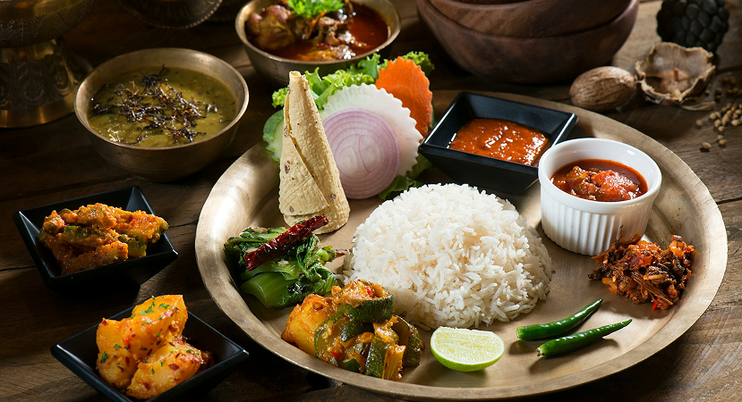

FOODIESICONIC ESTABLISHMENTS ARE REINVENTING
From heritage Newari bjoj ghara to modern Thakali kitchens, Nepali restaurants are blending age-old recipes with contemporty dinning experiences. Discover how tradition meets innovation across Kathmandu.......
READ MORE